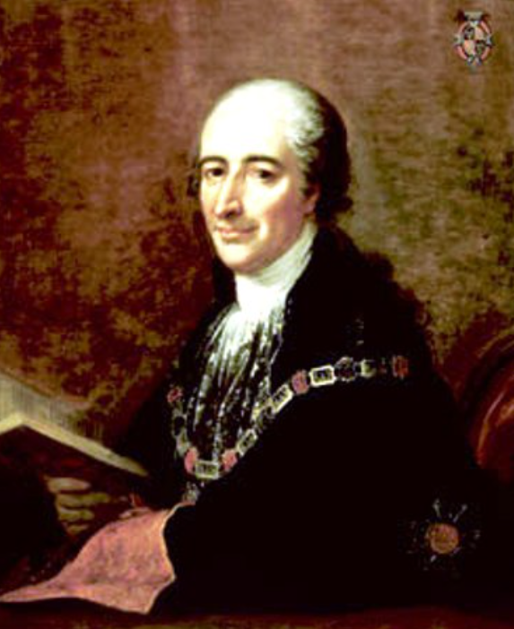
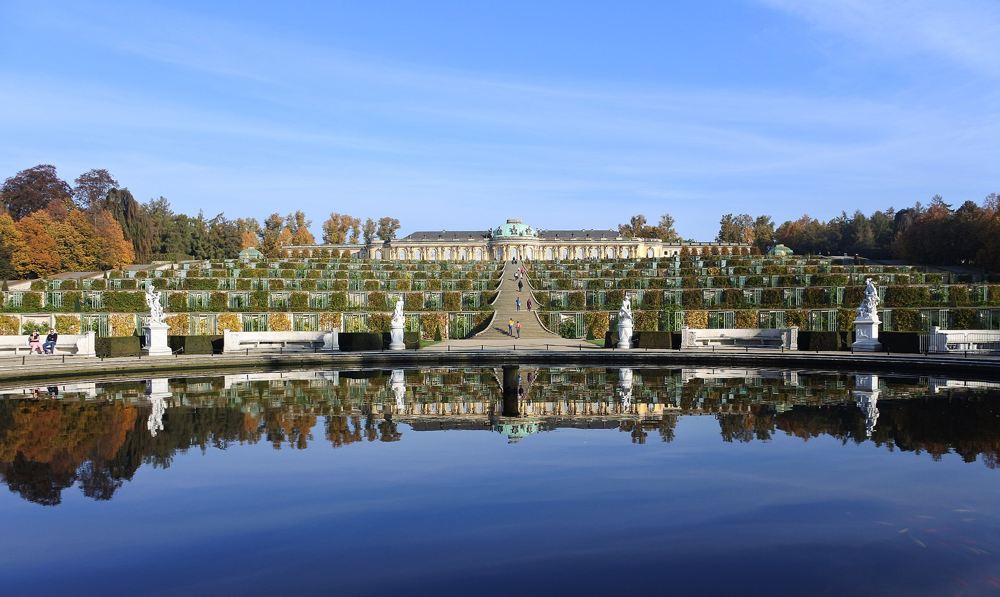
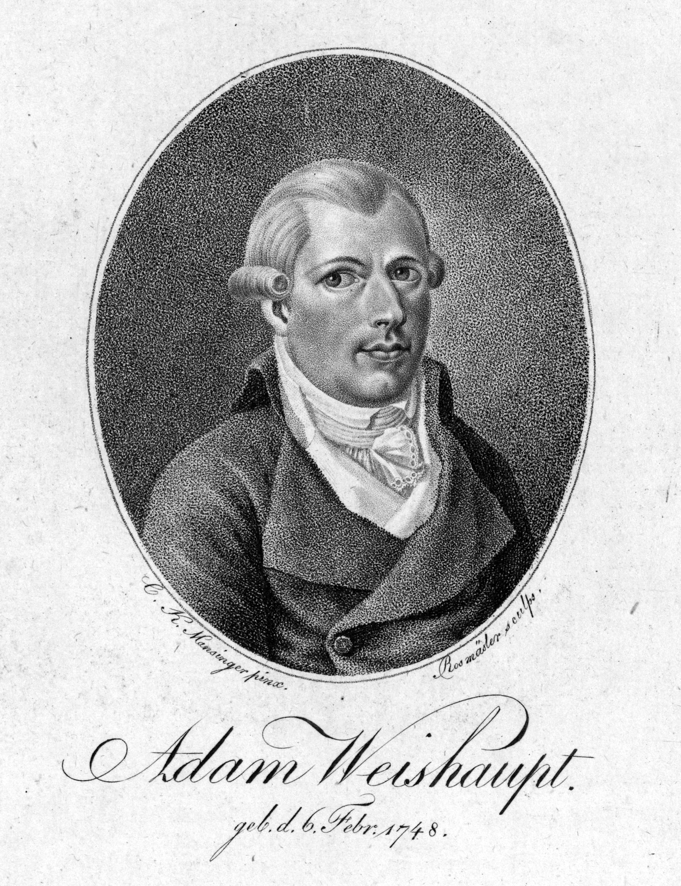
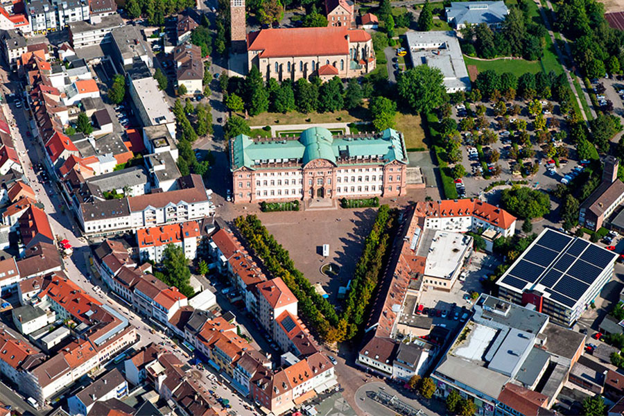

바이에른의 배신 (3) - 일루미나티의 그림자
게시: 2024-08-26T06:30:30+09:00
나폴레옹보다 10년 먼저 태어난 청년이 있었습니다. 이 청년이 막시밀리안 칼 조제프 프란츠 드 파울라 히에로니무스 드 가네린 드 라 튈(Maximilian Karl Joseph Franz de Paula Hieronymus de Garnerin de la Thuille)이라는 프랑스어와 독일어가 뒤섞인 매우 긴 이름을 가지게 된 이유는 그 아버지가 사보이(Savoy) 공국 출신으로 바이에른 군대에 자리를 얻고 뮌헨에 정착한 귀족이었기 때문이었습니다. 따라서 뮌헨에서 태어난 이 청년의 국적은 바이에른이었지만 어려서부터 집에서는 프랑스어를 썼고, 나중에 바이에른의 총리가 되어 몽겔라스 백작(Graf von Montgelas)이라는 이름으로 잘 알려지게 된 이 청년은 노인이 되어서도 독일어보다는 프랑스어를 훨씬 더 잘 했다고 합니다.

(이 초상화는 몽겔라스의 1806년 당시, 즉 47세 때의 모습입니다. 원래 좀 노안인가봐요.) 그렇다고 몽겔라스가 젊어서부터 자신의 정체성을 독일인 혹은 바이에른인이 아닌 독일에 사는 프랑스인으로 인식하고 있었던 것은 절대 아니었습니다. 당시 독일권에서는 프랑스 문화를 숭상하고 자기들끼리도 프랑스어로 이야기하는 것이 매우 흔했기 때문이었습니다. 프로이센의 자존심 프리드리히 대왕도 프랑스어를 더 많이 썼고 시를 지을 때는 당연히 프랑스어로 지었으며, 자신의 궁전 이름도 상수시(Sans Souci, 근심이 없다는 뜻)라고 지었습니다. 요즘 우리나라에서 고급 아파트 이름을 트럼프 타워나 튈르히 같은 영어나 프랑스어로 짓는 것과도 비슷했습니다. 몽겔라스는 당시 독일 귀족 청년이 흔히 그러듯이 자국내의 잉골슈타트(Ingolstadt) 뿐만 아니라 프랑스에 유학을 가서 낭시(Nancy)와 스트라스부르(Strasbourg) 등에서 교육을 받았기 때문에 더욱 프랑스 문화에 동화되었지만, 자신에 대해서 소개할 때가 있을 경우 언제나 스스로를 바이에른 사람이라고 긍지를 가지고 말했다고 합니다.

(포츠담에 있는 프리드리히 2세의 상수시(Sanssouci) 궁전입니다. 원래는 프랑스어 Sans (without) Souci (care, anxiety)인데 고유명사처럼 붙여서 Sanssouci라고 표기하고, 독일어로도 프랑스 발음 그대로 상수시라고 읽는다고 합니다.) 그렇게 학업을 마친 몽겔라스는 20세가 되던 1779년에 바이에른에서 공무원 생활을 시작했는데, 하는 일은 하필 출판물 검열이었습니다. 이건 당시 유럽에서 꽤 중요한 일이었습니다. 당시 인쇄물이란 요즘의 인터넷 게시판이나 유튜브, 방송의 역할을 하는 것이었습니다. 전제왕권의 유지를 위해서는 선진국이던 프랑스 등에서 슬금슬금 들어오던 불온한 계몽사상 등을 통제해야 했는데, 그러자면 어떤 책, 어떤 신문, 어떤 팜플렛이 그런 불온한 사상을 담고 있는지 판단하고 통제할 수 있는 유식한 공무원이 필요했습니다. 몽겔라스는 그런 일에 딱 맞는 활기차고 배운 것이 많은 젊은 귀족었습니다. 당시 바이에른 선제후였던 카알 테오도어도 몽겔라스와 이야기를 해보고는 이 교양있고 우아하며 박학다식한 청년을 매우 마음에 들어했고 총애하게 되었습니다. 그러나 젊은 몽겔라스에게는 비밀이 있었습니다. 일루미나티(Illuminati), 그러니까 진짜 비밀결사의 조직원이었던 것입니다. 지난 편에도 소개드렸듯이, 일루미나티는 그 이름 자체가 보수층에서 극혐하는 용어인 '깨시민'이라는 뜻으로서, 과거의 인습은 물론, 종교와 권력의 영향력을 제한하는 것이 조직의 존재 목적이었으니 군주로서는 박멸 대상이었습니다. 실제로 카알 테오도어도 일루미나티를 여러 차례에 걸쳐 불법화하고 탄압했습니다. 그런데, 그런 탄압 과정에서 젊은 몽겔라스도 일루미나티 조직원이었다는 것이 밝혀지고 말았습니다. 분노한 카알 테어도어는 당장 몽겔라스를 파면했습니다.

(일루미나티의 창시자는 1748년생인 아담 바이스하웁트(Adam Weishaupt)입니다. 잉골슈타트(Ingolstadt) 법대 교수였던 그는 1776년 일루미나티를 창시했는데, 그는 칸트 등 당대 철학자들의 영향을 많이 받긴 했지만 상대적으로 과격한 계몽주의를 지향했고, 일루미나티를 철저한 점조직으로 구성하여 비밀을 중시했습니다. 그는 주로 편지와 에세이 등을 통해 그의 사상을 조직원들에게 펼쳤는데, 아마 몽겔라스도 잉골슈타트 유학 시절에 그의 문서를 접하고 일루미타니에 가입했던 것 같습니다. 그러나 결국 1784년 바이스하웁트의 에세이가 당국에 발각되었고, 그 내용에 분노한 선제후 카알 테어도어가 일루미나티를 불법단체로 규정했으며, 바이스하웁트는 외국으로 도주해야 했습니다. 그는 튀링겐(Thüringen)의 고타(Gotha)에서 어네스트 2세(Ernest II)의 후원을 받아 저술 활동을 계속했으나, 그 이후 일루미나티 조직은 사실상 와해되었다고 합니다.) 일자리를 잃었을 뿐만 아니라 좁은 뮌헨 상류층 사회에서도 사실상 축출된 몽겔라스는 뮌헨을 떠나 라인강 서쪽으로 건너가 바이에른의 고립영토인 츠바이브뤼컨(Zweibrücken, 두 개의 다리라는 뜻)으로 향했습니다. 그의 일루미나티 형제들이 츠바이브뤼컨 공작 카알 2세(Karl II. August Christian)의 궁정에 일자리를 알아봐주었기 때문이었습니다. 그러나 바이에른에서 일루미나티 딱지가 붙은 사람의 인생은 고달픈 것이었습니다. 얼마 안 되어 일루미나티 잔당이라는 딱지 때문에 몽겔라스는 츠바이브뤼컨 공작의 궁정에서도 쫓겨나는 신세가 되었습니다. 그러나 죽으라는 법은 없었나 봅니다. 그는 츠바이브뤼컨 공작의 동생의 개인 비서라는 초라한 자리나마 일자리를 얻을 수 있었습니다. 몽겔라스보다 3살 연상이었던 이 동생의 이름은 막시밀리안 조제프(Maximilian Joseph)였습니다.
(츠바이브뤼컨 공작 카알 2세의 1783년 모습입니다. 그는 여러가지 측면에서 바이에른 선제후 카알 테오도어와 대립하는 입장이었으므로, 카알 테오도어에게 쫓겨난 사람이 찾아가기 딱 좋은 사람이긴 했습니다. 하지만 이 사람도 공작님이니 일루미나티 조직원이 반갑지는 않았을 것 같습니다. 그나저나 오른쪽의 흑인(아마도 무어인)의 모습이 인상적이네요. 나폴레옹도 그랬지만 저렇게 터번을 쓴 이국적 하인을 거느리는 것이 당시엔 무척이나 힙한 유행이었던 것 같습니다.) 촉망받던 바이에른의 젊은 공직자였던 몽겔라스는 바이에른 사회의 진보를 위해 비밀결사에 몸을 담았던 죄로 정말 빠르게 몰락한 셈이었습니다. 이제 별 희망이 보이진 않는 귀족가문 차남의 개인 비서 신세가 되었으니까요. 이제 그는 법안 개정이나 국정 방향, 외교 문제 대신 젊은 귀족 나부랭이의 사교 편지나 빚 문서 등이나 대필하며 살아가야 할 운명이었습니다. 그나마 위안이 된 것은 이제 새로운 고용주가 된 젊은 귀족 막시밀리안 조제프가 몽겔라스 자신과 결이 잘 맞는 인물이라는 점이었습니다. 막시밀리안 조제프는 귀족가 차남이 흔히 그러하듯 21살이던 1777년부터 프랑스 육군 대령으로 자리를 얻어 직업 군인의 길을 걸었습니다. 요즘 상식으로는 독일 귀족이 프랑스군에 대령부터 군생활을 시작하는 것이 이해가 안 되는 일입니다만, 어차피 당시는 국적보다는 신분계급이 더 중요한 시대였습니다. 아직 혁명 전이던 프랑스군도 영국군처럼 군부대의 계급을 거금을 내고 사는 매관매직을 시행하고 있었고, 그렇게 돈 내고 연대장 자리를 꿰어차는 사람이 이왕이면 외국의 점잖은 귀족이면 프랑스군으로서도 마다할 이유가 없었습니다. 막시밀리안 조제프는 그런 식으로 돈의 힘으로 프랑스군 소장 계급까지 초고속으로 승진하며 순조로운 직업 군인의 생활에 안착하는 듯 했습니다. 아마 이대로 계속 살았다면 그가 몽겔라스라는 청년을 비서로 고용하는 일은 없었을 것입니다.

(젊은 시절의 막시밀리안 조제프입니다. 젊어서부터 이미가 넓으셨네요.) 그러나 그들은 격변의 시대를 살고 있었습니다. 1789년 프랑스 대혁명이 터지자, 막시밀리안 조제프는 큰 돈을 쏟아붓고 샀던 계급과 프랑스내의 모든 자산을 한 순간에 잃어버리게 되었습니다. 그는 다른 프랑스 귀족들처럼 혁명을 피해 오스트리아로 피난을 떠났고, 거기서 오스트리아군에 자리를 얻어 어제의 아군이었던 프랑스군과 대치하게 되었습니다. 사실 그렇게 뛰어난 군 지휘관이라고 할 수는 없었던 그에게 주요 부대 지휘관 자리가 주어지지는 않았고, 그에게 주어진 오스트리아군 계급과 그에 따른 급여는 사실상 난민 보조금 같은 것이었을 것입니다. 당연하겠지만 이렇게 오스트리아로 피난을 떠나던 막시밀리안 조제프는 프랑스에서 고용하고 있던 프랑스인 식솔들을 계속 고용하며 데리고 올 수가 없었습니다. 당시 대령 정도의 장교만 하더라도 개인 비용으로 비서와 마부, 요리사 등을 고용하여 진중에 데리고 있는 것이 상식적이었습니다. 그렇게 현지에서 고용한 비서가 바로 몽겔라스였던 것입니다. 그러다 뜻밖의 일이 벌어집니다. 1795년, 그의 형이자 츠바이브뤼컨 공작인 카알 2세가 48세의 젊은 나이로 세상을 떠난 것입니다. 그의 형에겐 아들이 있기는 했지만 그 아이는 몇년 전에 불과 8세의 나이로 요절했기 때문에, 오스트리아군에서 눈치밥을 먹고 있던 막시밀리안 조제프가 갑자기 츠바이브뤼컨 공작 자리를 승계하게 되었습니다. 이제 드디어 고달픈 눈치밥 신세에서 벗어나 당당한 공작님이 된 막시밀리안 조제프에겐 빛나는 앞날이 기다리고 있었을까요? 어림없는 일이었습니다. 그의 영토인 츠바이브뤼컨 공작령은 모조리 프랑스 혁명군 손아귀에 떨어진지 오래였습니다. 허울만 공작님일 뿐, 망명객 신세인 것은 여전했습니다.

(츠바이브뤼컨의 현재 모습입니다. 인구 3만5천 정도의 소도시이고, 프랑스 국경에서 멀지 않은 곳이라서 프랑스 사람들이 부르는 프랑스어 이름도 있는 도시입니다. 당연히 프랑스어 이름도 Deux-Ponts (듀퐁, 두 개의 다리라는 뜻)인데, 이 도시의 영어 이름도 프랑스식으로 듀퐁입니다. 동부 바이에른에 있는 도시 레겐스부르크(Regensburg)는 프랑스에서는 라티스봉(Ratisbon)이라고 부르는데, 이 도시의 영어 이름도 프랑스식으로 라티스본입니다.) 그나마 다행인 것은 이런 고달픈 생활 속에서 막시밀리안 조제프에겐 몽겔라스의 헌신적인 봉사가 있었다는 것이었습니다. 이런 떠돌이 생활 속에서 여기저기 아쉬운 소리도 많이 해야 하고 손도 벌려야 하고 모자란 예산으로 어떻게든 살림을 꾸며야 했을 텐데, 아마 몽겔라스가 그런 일들을 매우 잘 처리했었나 봅니다. 이 기간 중에 막시밀리안 조제프는 몽겔라스의 교양과 통찰력, 그리고 실무 능력에 매우 감탄했던 것 같습니다. 이렇게 연명해가던 막시밀리안 조제프에게 1799년, 진짜 인생역전이 일어납니다. Source : The Life of Napoleon Bonaparte, by William Milligan Sloane Napoleon and the Struggle for Germany, by Leggiere, Michael V With Napoleon's Guns by Colonel Jean-Nicolas-Auguste Noël https://en.wikipedia.org/wiki/History_of_Bavaria https://en.wikipedia.org/wiki/Charles_II_August,_Duke_of_Zweibr%C3%BCcken https://en.wikipedia.org/wiki/Maximilian_I_Joseph_of_Bavaria https://en.wikipedia.org/wiki/Maximilian_von_Montgelas https://en.wikipedia.org/wiki/Adam_Weishaupt https://en.wikipedia.org/wiki/Sanssouci https://westpfalz.de/leben-wohnen_en/gemeinden-im-portrait_en/stadt-zweibruecken_en/?lang=en#